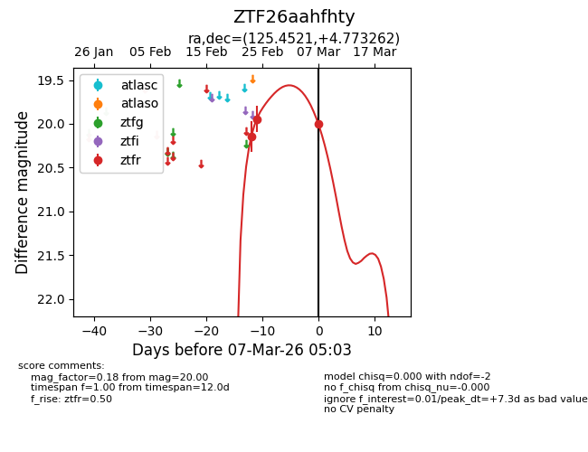
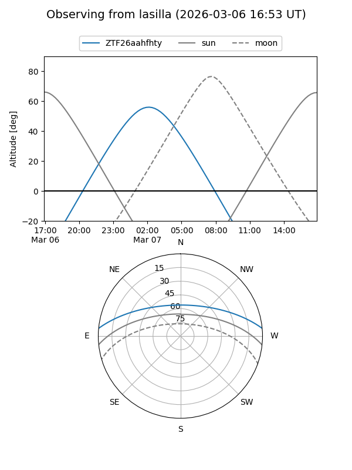
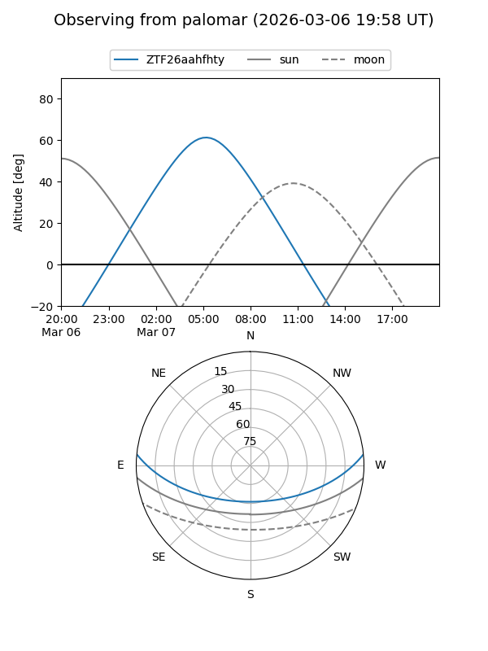
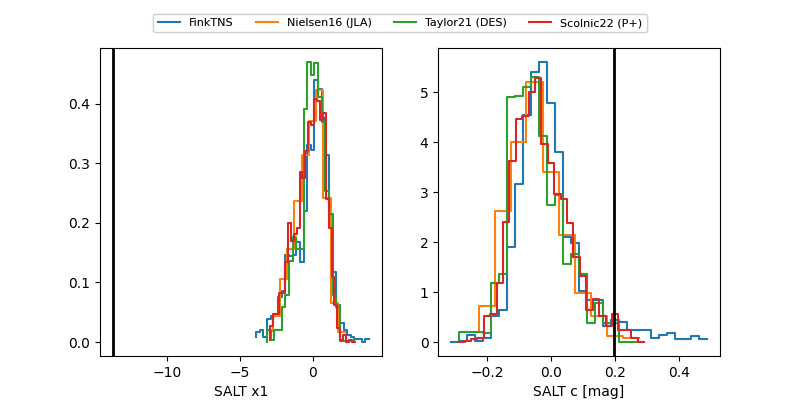

ZTF26aahfhty
Target ZTF26aahfhty at 2026-03-07 05:06
Aliases and brokers:
FINK: link
Lasair: link
ALeRCE: link
alt names
ZTF26aahfhty (ztf,fink_ztf)
Coordinates:
equatorial (ra, dec) = 125.4521,+4.77326
equatorial (HMS+DMS) = 08:21:48.51,+04:46:23.74
galactic (l, b) = (219.1665,+22.25135)
Flags:
Photometry:
last ztfr=20.00
3 ztfr detections
Lightcurve

Visibility


Additional plots
